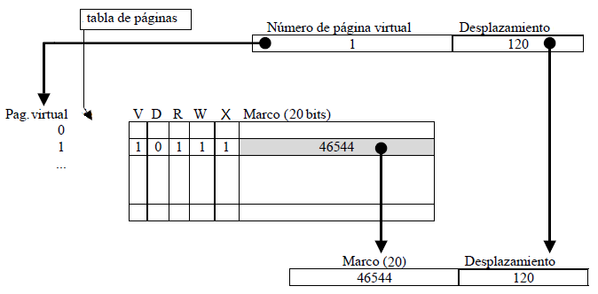
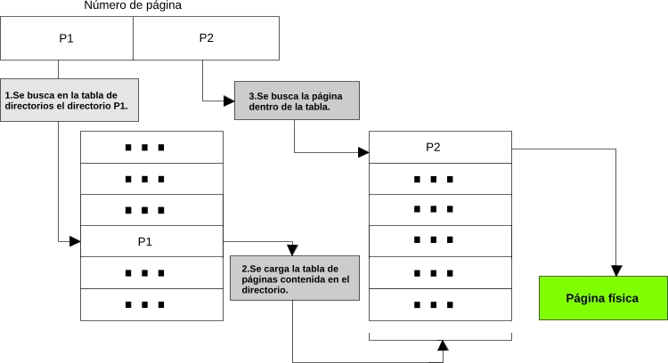
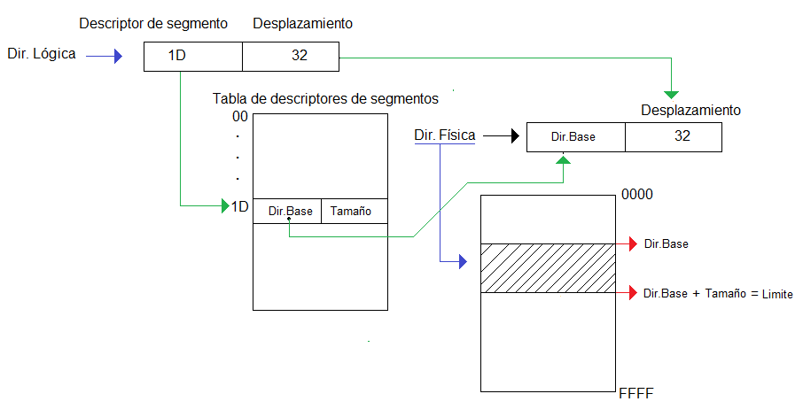

Memoria
En la memoria física de un computador coexisten el sistema operativo, las rutinas de enlace dinámico y los programas de usuario. En los sistemas operativos modernos la gestión de memoria resuelve aspectos como:
- La carga de programas y su ubicación, establece la correspondencia entre las direcciones lógicas del programa y su ubicación física en memoria.
- La presencia simultánea de más de un programa en memoria.
- La posibilidad de cargar rutinas en tiempo de ejecución (rutinas de enlace dinámico1 ).
- La compartición de espacios de memoria por varios programas.
- La ejecución de programas que no caben completos en memoria.
- La gestión eficiente del espacio de memoria libre.
Las políticas de gestión a lo largo de la historia, son:
Monitor residente, particionado fijo (MFT) o variable (MVT), swapping, paginación y segmentación, enlace dinámico y memoria virtual.
Pero los sistemas operativos actuales utilizan memoria virtual soportada por paginación y segmentación.
Paginación
La paginación es una estrategia de organización de la memoria que consiste en dividir la memoria en porciones de igual tamaño, llamadas marcos de página o páginas. Están definidas por un número de página, que identifica a cada una. Cada página se asigna en exclusividad a un proceso.
Los valores óptimos para las porciones son: en arquitectura de 32 bits es de 4KB, y en arquitectura de 64 bits es de 8KB.
La traducción de las direcciones de memoria se basa en dos conceptos:
- El traductor divide las direcciones lógicas en 2 partes de la siguiente forma: los n bits más significativos identifican la página y el resto identifica el desplazamiento.
- Cuando el traductor dinámico de páginas recibe, en una dirección lógica, un número de página, examina una tabla (llamada tabla de páginas) en la que se relacionan las páginas lógicas con las páginas físicas y obtiene la dirección real (Número de marco) de la siguiente forma:

Al intentar acceder a una página ausente se produce un fallo (llamado en este caso fallo de página).
Con el objetivo de que la tabla de paginación no esté cargada completamente en la memoria y que no ocupe direcciones consecutivas, se utilizan las tablas de páginas multinivel, cuyo objetivo es paginar la tabla de páginas.
En los sistemas operativos con tablas de páginas multinivel los números de página se dividen en dos partes, los bits más significativos indican el directorio de páginas correspondiente y los bits menos significativos el índice del directorio en el que se encuentra la página buscada:

Segmentación
Un segmento es un espacio de memoria de tamaño variable, compuesto por:
- Descriptor: Identificador único del segmento (dentro del espacio de memoria del proceso).
- Tamaño del segmento

Las características de la segmentación son:
- Cada proceso en ejecución (esté activo, bloqueado o preparado) tiene su tabla de segmentos.
- Se puede hacer que 2 segmentos se superpongan de manera que compartan direcciones de memoria física con direcciones lógicas diferentes, es lo que se conoce como solapamiento. De esta manera, procesos diferentes pueden compartir información y código usando la memoria común, pero no pueden compartir datos (complicaría la gestión)
- Protección de memoria: añadir 3 bits a la tabla de descriptores de segmentos para los permisos ( r w x ).
- Es posible la redimensión de segmentos siempre que haya posiciones libres contiguas, o crear un nuevo segmento y copiar el contenido del anterior.
- Gestión compleja, sobre todo por su tamaño variable